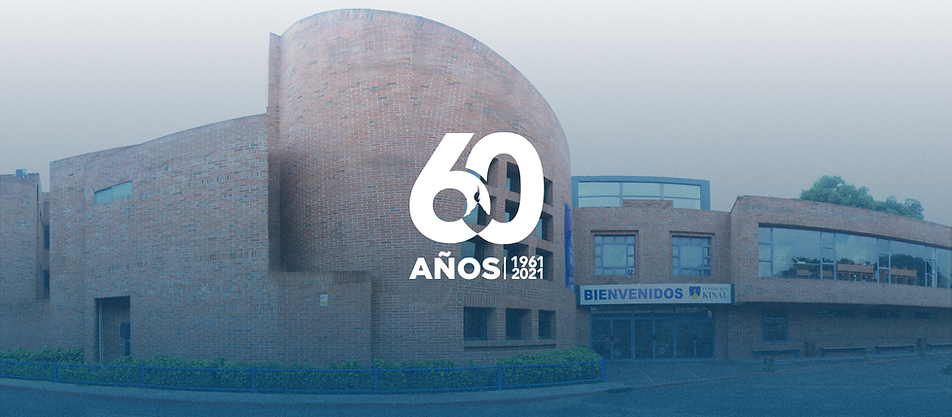

- .
-

Kinal es un Centro Educativo privado, no lucrativo, dirigido a la formación técnica profesional de jóvenes y adultos, de beneficio colectivo y asistencia social en favor de los sectores más necesitados de la comunidad.
Nuestro valor fundamental es enseñar a realizar el trabajo bien hecho, que sea la base de la superación de alumnos y el medio para servir a los demás.